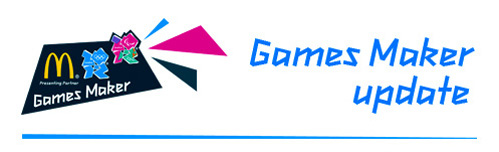

Games Maker role
Your possible Games Maker role 24/11/2011
Dear Catherine,

You may have already attended a Games Maker selection event, but in case you haven't, we wanted to let you know that you're being considered for a driving role with one of our teams. (You'll be contacted separately about your selection event.) The safety of drivers and passengers is paramount to the London 2012 Organising Committee, so we will need to carry out a driving licence check on your behalf. If you’re offered a Games Maker role, you will also need to complete an online driving assessment and driver safety training.
AA Drive Tech is conducting driving licence checks on our behalf, and will contact you soon, asking you to complete a data protection mandate. Once you’ve done this, they will then be able to check your driving licence details with the Driver and Vehicle Licensing Agency (DVLA). In order for AA DriveTech to get in touch with you, we are providing them with your first and last name, as well as your email address and phone number. This information will be kept confidential by AA Drivetech and will only be used for the driving licence check as part of the Games Maker recruitment process.
We would like to thank you for helping us to carry out these checks. Please note, AA Drivetech checks do not apply to foreign driving licence holders. If you hold a foreign licence, please click on the link below. If you have any queries, please call the Games Maker support centre on 0845 402 2012 or email info@gamesmaker.london2012.com Opening hours are 8am to 8pm Monday to Friday and 10am to 6pm Saturday.
Many thanks,
The London 2012 Volunteer team
Your Olympic Games offer from the Transport team! 22/12/2011
Dear Catherine,
Congratulations!
Following your interview to be a London 2012 Games Maker, we are delighted to inform you that we would like to offer you a role in the Transport team at the Olympic Games!
We received almost 250,000 Games Maker applications, many of which were of an incredibly high standard. Selecting our volunteers is a very tough job, but we were really impressed with your interview – we know you’ve got the passion, enthusiasm and commitment needed to make the Games happen. We hope that you are proud to be chosen to take part in the greatest show on earth.
How to find out your role and venue, and accept your offer:
- Log in to the Games Maker zone using your email address and password
- Click on the 'My status' tab to find out your role and venue
- Tick the box displayed on the left hand side and click on 'Accept role'
- A pop-up box will open asking you to agree with the Volunteer Policy
– please make sure you have read, understood and agree to the LOCOG Games Maker Volunteer Policy
- Click ‘OK’
Please accept this offer within the next two weeks. If you don’t accept your role in this time, we may offer it to another applicant. Your offer is subject to a successful background check being carried out. You can find out more about your role by typing your team and role in to the Games Maker FAQ tool. To find out more about your venue, go to the 'Roles and venues' page in the Games Maker zone.
Please be aware that you may receive another offer to volunteer at the Paralympic Games, so keep an eye on your inbox. We have taken lots of care to match you with the right role, so please note that you will not be able to swap. If you would like to be a Games Maker, you must accept the role that you have been offered. If you’re having problems accepting your role or have any queries about volunteering at the London 2012 Games, please contact the Games Maker support centre on 0845 402 2012 or info@gamesmaker.london2012.com.
Thank you for your patience over the last few months – we know you’ve had a long wait and we really appreciate your dedication to volunteering at London 2012. To find out what happens next on your journey to the Games, take a look at the Games Maker timeline. We look forward to meeting you again at training in 2012!
Best wishes,
The London 2012 Volunteer team
OLYMPIC GAMES role confirmation 23/12/2011
Dear Catherine,
Thank you for confirming that you will take on the role of T3 Driver with the TRANSPORT team at FLEET DEPOT OLYMPIC PARK during the OLYMPIC GAMES.
Remember to keep checking the Games Maker zone for news, articles and details of forthcoming training.
Best wishes,
The London 2012 Volunteer team